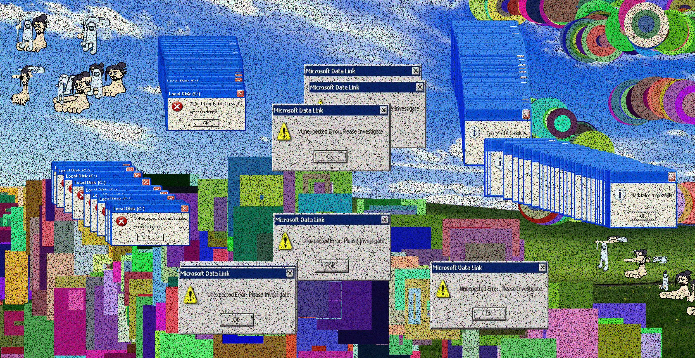

DIY Photoshop with P5.js
2023
Digital Media
2D Design and Color Concept
Illustration
Animation
About Me
Statement

Click here to try
var img; var initials ='dn'; // your initials var choice = '1'; // starting choice, so it is not empty var screenbg = 250; // off white background var lastscreenshot=61; // last screenshot never taken var images = []; var lastClickTime = 0; var brushSize; var sprayDensity; function preload() { // preload() runs once, it may make you wait // img = loadImage('cat.jpg'); // cat.jpg needs to be next to this .js file // you can link to an image on your github account img = loadImage('amongus.png'); img2 = loadImage('feet.png'); img3 = loadImage('error.png'); img4 = loadImage('unerror.png'); img5 = loadImage('failed.png'); img6 = loadImage('xp.jpg'); images = [img, img2]; } function setup() { createCanvas(windowWidth, windowHeight); // canvas size background(screenbg); // use our background screen color } function draw() { if (keyIsPressed) { choice = key; // set choice to the key that was pressed clear_print(); // check to see if it is clear screen or save image } if (mouseIsPressed){ newkeyChoice(choice); // if the mouse is pressed call newkeyChoice } } function newkeyChoice(toolChoice) { //toolchoice is the key that was pressed // the key mapping if statements that you can change to do anything you want. // just make sure each key option has the a stroke or fill and then what type of // graphic function if (toolChoice == '1' ) { //brush with random size strokeWeight(random(10)); line(mouseX, mouseY, pmouseX, pmouseY); } else if (toolChoice == '3') { //brush with randomized settings (color, size) r = random(255); // r is a random number between 0 - 255 g = random(255); // g is a random number betwen 0 - 255 b = random(255); // b is a random number between 0 - 255 stroke(r, g, b); strokeWeight(random(100)); line(mouseX, mouseY, pmouseX, pmouseY); } else if (toolChoice == '2') { //white brush stroke(screenbg); line(mouseX, mouseY, pmouseX, pmouseY); } else if (toolChoice == '4') { //randomized rect brush r = random(255); // r is a random number between 0 - 255 g = random(255); // g is a random number betwen 0 - 255 b = random(255); // b is a random number between 0 - 255 stroke(r, g, b); strokeWeight(random(100)); rect(mouseX, mouseY, random(100), random(100)); } else if (key == '5') { //a gradient brush colorMode(HSB); // background(frameCount % 360, 100, 100); if(mouseIsPressed){ noStroke(); stroke((5*frameCount) % 360, 40, 100); fill((5*frameCount) % 360, 100, 100); // ellipse(mouseX, mouseY, 30,30); strokeWeight(20); line(mouseX, mouseY, pmouseX, pmouseY); } colorMode(RGB); } else if (toolChoice == '6') { //filled the background in dark gray background(40); } else if (toolChoice == '7') { //filled the background in white background(255); } else if (toolChoice == '8') { //add noise loadPixels(); for (let i = 0; i < pixels.length; i++) { if (random(1) < 0.05) { // Introduce random noise to pixels pixels[i] = color(random(255), random(255), random(255)); } } updatePixels(); } else if (toolChoice == '9') { //spray brush brushSize = 50; // Set brush size sprayDensity = 30; // Set spray density for (let i = 0; i < sprayDensity; i++) { // Generate a random position within the brush size let x = mouseX + random(-brushSize / 2, brushSize / 2); let y = mouseY + random(-brushSize / 2, brushSize / 2); // Generate a random color for the brush let brushColor = color(random(255), random(255), random(255)); // Draw a small ellipse with low opacity to create an airbrush effect fill(red(brushColor), green(brushColor), blue(brushColor), 10); noStroke(); ellipse(x, y, brushSize, brushSize); } } else if (toolChoice == '0') { //change the bg to window xp bg background(img6); } else if (toolChoice == 'g' || toolChoice == 'G') { // random images var randomImage = random(images); image(randomImage, mouseX, mouseY, random(100), random(100)); key=""; } else if (toolChoice == 'c' || toolChoice == 'C'){ //windows xp error image(img3, mouseX, mouseY, 200, 180); } else if (toolChoice == 'v' || toolChoice == 'V'){ //windows xp error image(img4, mouseX, mouseY, 260, 150); } else if (toolChoice == 'b' || toolChoice == 'B'){ //windows xp error image(img5, mouseX, mouseY, 150, 130); } } function testbox(r, g, b) { // this is a test function that will show you how you can put your own functions into the sketch x = mouseX; y = mouseY; fill(r, g, b); rect(x-50, y-50, 100, 100); } function clear_print() { // this will do one of two things, x clears the screen by resetting the background // p calls the routine saveme, which saves a copy of the screen if (key == 'x' || key == 'X') { background(screenbg); // set the screen back to the background color } else if (key == 'p' || key == 'P') { saveme(); // call saveme which saves an image of the screen } } function saveme(){ //this will save the name as the intials, date, time and a millis counting number. // it will always be larger in value then the last one. filename=initials+day() + hour() + minute() +second(); if (second()!=lastscreenshot) { // don't take a screenshot if you just took one saveCanvas(filename, 'jpg'); key=""; } lastscreenshot=second(); // set this to the current second so no more than one per second } }